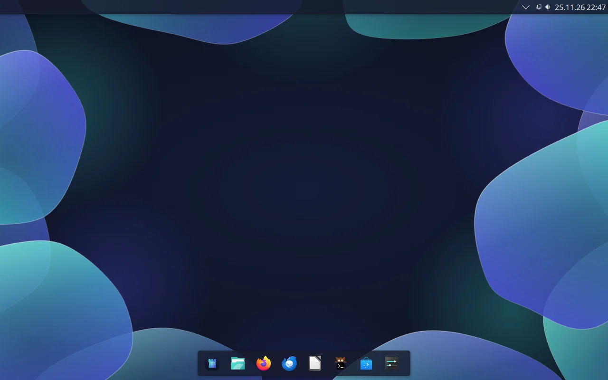
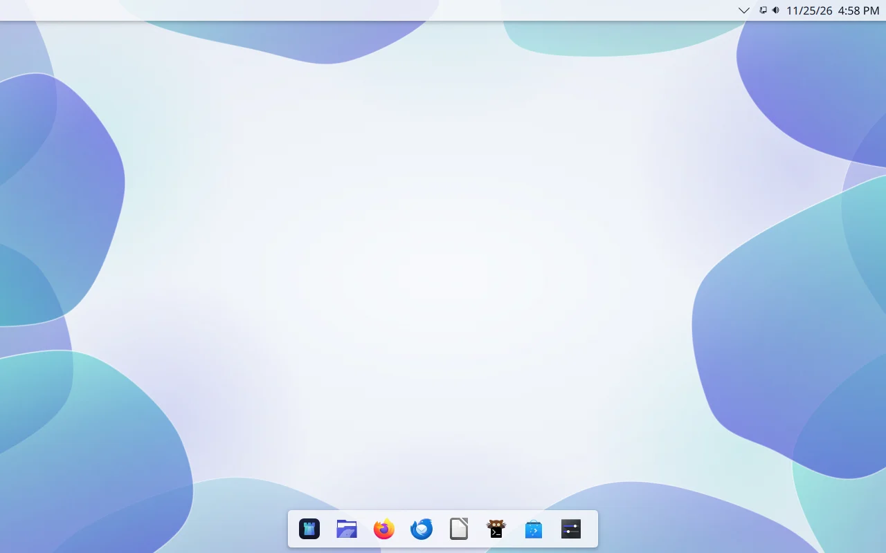
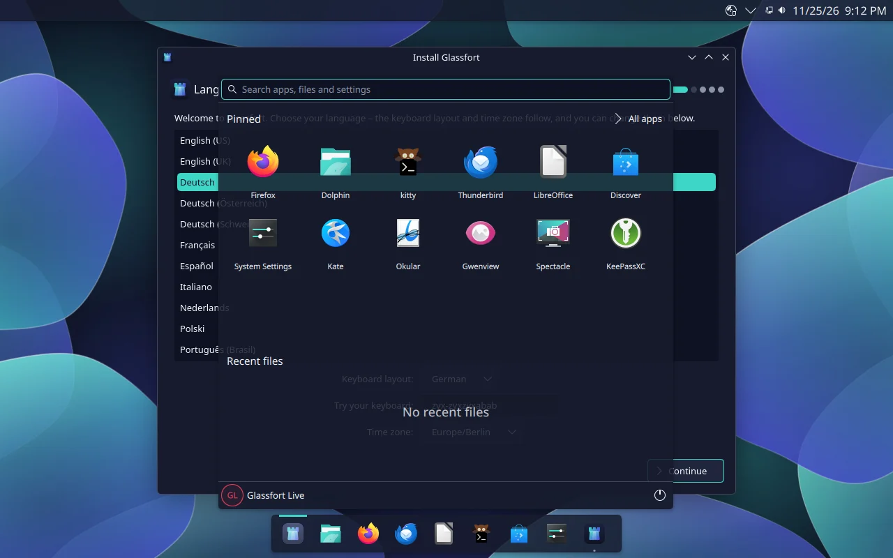
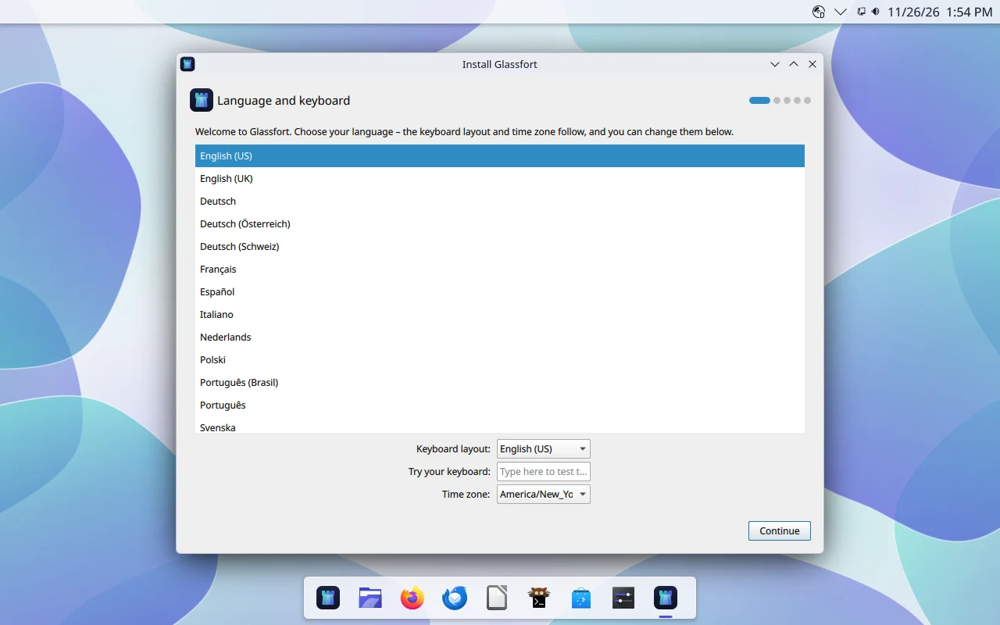
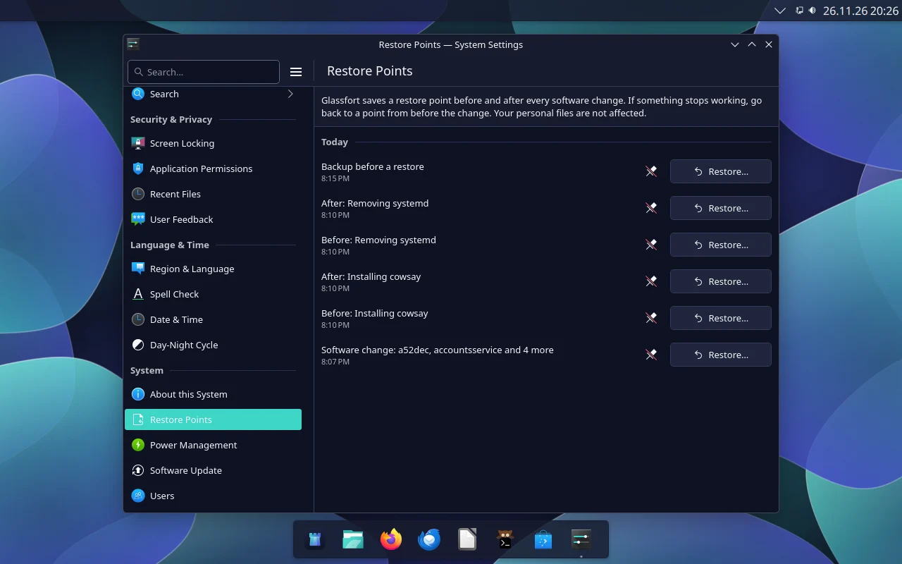
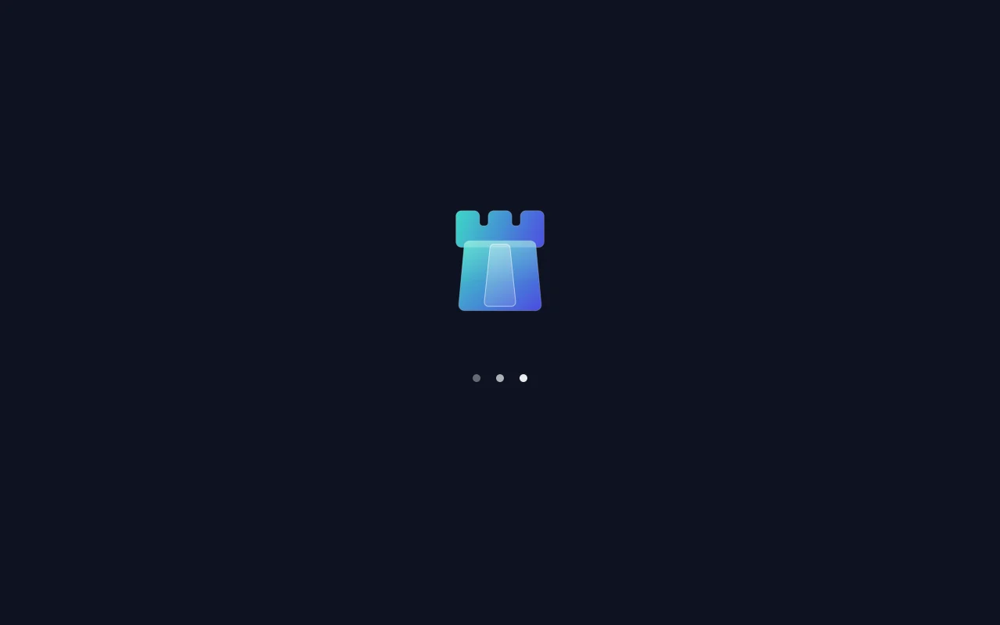

Beautiful as glass. Strong as a fortress.
Glassfort is a Linux system that works the way Windows taught you, looks like frosted glass, and takes a bootable snapshot before every change. A bad update becomes one click in the boot menu.
In development: the first installable ISO is in testing
Switching away from Windows should not feel like a downgrade, a hobby or a risk.
Glassfort keeps the habits you already have: a taskbar, a Start menu, the same shortcuts, windows that float. It wraps them in one calm glass design, from the boot screen to the last settings page.
Underneath, it is built to survive you. Every system change is a snapshot you can boot. The disk is encrypted, the firewall is on, and if you still need a Windows program, it will run in a window next to your Linux apps.
Six promises
- Familiar
- Taskbar, Start menu, floating windows and the Windows shortcuts you know.
- Beautiful
- One frosted-glass design and one accent colour, everywhere.
- Unbreakable
- Every change creates a bootable snapshot, and a fallback kernel is always installed.
- Secure
- Full-disk encryption, firewall and AppArmor are on from the first boot.
- No excuses
- Windows apps can run in a VM, shown as normal windows. Planned
- Open
- Open source. No bundled proprietary images, no keys, no telemetry.
Go on. Break it.
This is what happens on a real Glassfort system, tested the same way in our VM test suite: an update removes something the system needs, the next boot fails, and the snapshot from before the update brings everything back.

Your system is fine. Install an update that goes wrong.
Calm by default.
A floating dock, a top bar and wallpapers made of frosted shapes. Glassfort follows your light or dark setting, from the boot splash to the login screen.





What's inside
Ready now in the preview
- KDE Plasma, curated: own Start menu, dock with live window previews and jump lists, control center
- Btrfs snapshots before every package change, bootable from the boot menu
- Restore Points in System Settings: every change on a timeline, go back with your password and one restart
- Encrypted disk by default, with a recovery key to write down
- Firewall, AppArmor, hardened kernel settings, compressed swap in RAM
- Firefox, Thunderbird, LibreOffice and the KDE apps preinstalled
- A five-screen installer in English and German
Coming next
- Snap layouts like on Windows 11
- An update app that reads the news before it upgrades
- Secure Boot with your own keys, TPM unlock
- An optional assistant that can change settings for you, off by default and local first
- Windows apps in a VM, as normal windows
Where we are
- Phase 1Glassfort on top of Arch: look, shell, snapshots, rollbackDone
- Phase 2Own ISO and installer, Restore Points, update appIn progress
- Phase 3AssistantPlanned
- Phase 4First-boot setupPlanned
- Phase 5Windows appsPlanned
Download Glassfort
There is no public ISO yet. The first one is being tested in virtual machines right now; it will appear here as soon as it installs and rolls back reliably.
Version , released
Needs a 64-bit PC with UEFI, 4 GB RAM and 40 GB of disk. The installer erases the whole disk you choose.